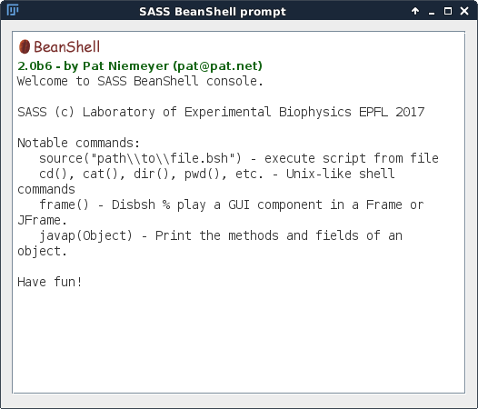

Scripting Interface¶
The SASS Command Prompt¶
SASS includes a beanshell scripting interface that supports the execution of either pre-made or ad hoc scripts for easily running and repeating simulations. The interface is accessed through the Plugins menu bar via Plugins > SASS > Command Prompt.
Inside this prompt you have access to a few Unix-like shell commands
by appending (); to the command name. For example:
pwd();
prints the current working directory.
Running Beanshell Scripts¶
Beanshell scripts that setup and launch localization microscopy
simulations may be run with the source() command. For security
reasons, you will want to ensure that the file you are sourcing is
trustworthy because the Beanshell interpreter will run whatever code
is contained within the file.
Here is how one would launch the example_run_generator.bsh example script from within the command prompt and which launches a basic PALM simulation:
source("/path/to/examples/example_run_generator.bsh");
Please be sure to change the path argument above to one for your specific machine, which includes changing / to \\ if you are using Windows.
Example Scripts¶
Example scripts for performing 2D and 3D simulations with PALM and STORM models may be found in the examples folder in the SASS parent directory.